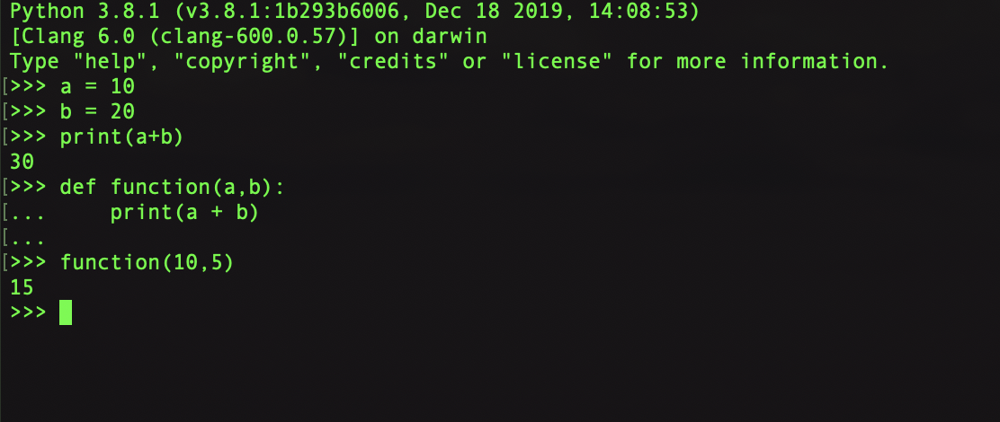

As python is an Interpreted Programming Language, it offers many capabilities which can be utilized not only for sake of learning it. But it can be utilized in many other ways and can be a plus point for writing the programs in Python. The simple to invoke the Python interpreter on a MAC is to just open up the terminal and put the command Python3 (Or instead of number any latest available version of Python). This would invoke the Python interpreter inside the terminal and now a person can start interacting with the interpreter. You can try any Python code or may write some function just for the sake of testing purpose. Even this can be used for examining the Python code blocks. Let's see an example to see how this could be done in the real world.

One of the best thing about the Python interpreter is that it can be used for examining the underlining C or Byte code of a specific block of code. In order to do this you can use
dis built-in Python module and can see the underlining code for a specific block of Python code.
Click Here for more information about this.